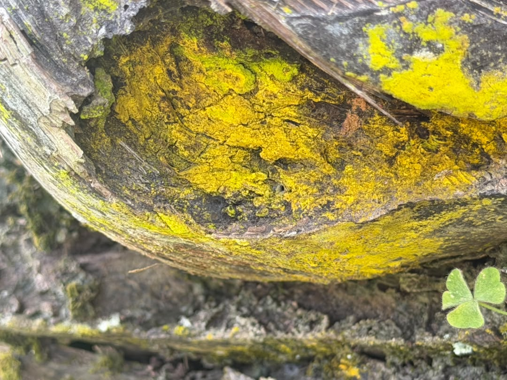

Les mousses
Les mousses sont de petites plantes terrestres non vasculaires, dépourvues de vraies racines (elles ne possèdent que des rhizoïdes) et de tissus conducteurs. Elles vivent surtout dans des milieux humides et ombragés, car leur reproduction dépend de l'eau. Chez elles, le gamétophyte (n) est la génération dominante, tandis que le sporophyte (2n) reste attaché à lui et en dépend pour sa nutrition.
1.L'innovation

**Innovation chez les mousses** Les mousses possèdent une tigelle feuillée (ou cormus), un appareil végétatif différencié en une petite tige (caulidie) portant des feuilles minces (phyllidies), fixé au sol par des rhizoïdes. Elles ne possèdent pas de vraies racines, ni de vrais vaisseaux conducteurs. Elles vivent principalement dans des milieux terrestres humides. Contrairement au thalle des algues, cet appareil présente déjà une organisation en tige et feuilles, même si ces structures ne sont pas de véritables organes vasculaires.
2.Reproduction
C**Reproduction chez les mousses** Chez les mousses, la reproduction sexuée implique des gamètes produits dans des organes protégés : les anthéridies (mâles) produisent des anthérozoïdes flagellés, et les archégones (femelles) contiennent l'oosphère. Les anthérozoïdes ont encore besoin d'une pellicule d'eau (pluie, rosée) pour nager jusqu'à l'archégone et féconder l'oosphère. Le zygote se développe alors en un sporophyte (2n) qui reste attaché au gamétophyte, et la capsule libère ensuite des spores haploïdes, dispersées par le vent.
3.Observation
Espece Spirogyra (à confirmer sur le terrain)
Habitat : Milieu terrestre
Coordonnées GPS : À renseigner après observation